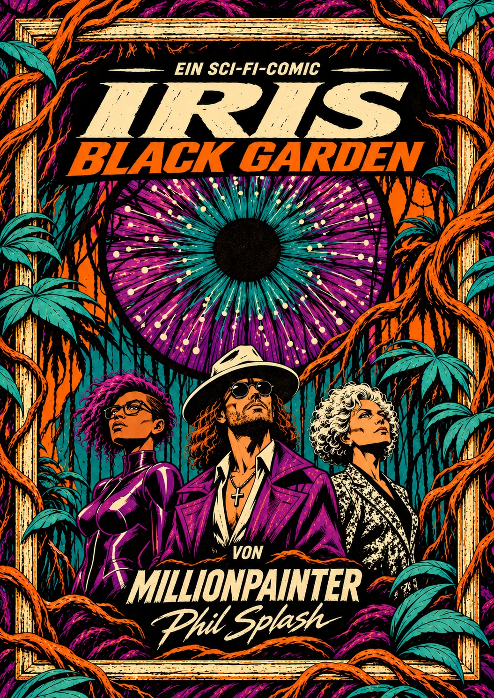
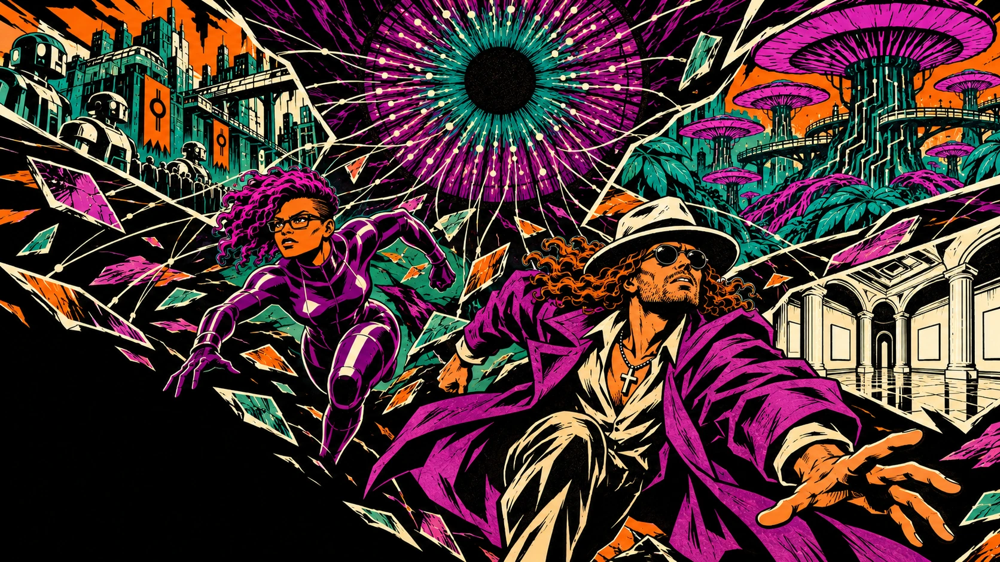
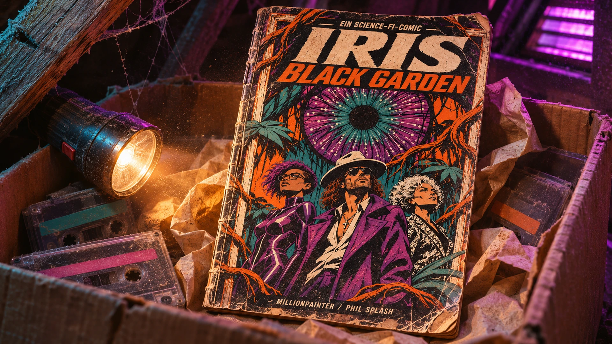

EIN SCI-FI-COMIC VON MILLIONPAINTER PHIL SPLASH
IRISBLACK GARDEN
Sie erschafft deine Welt.
Wer entscheidet, was du glaubst?
Geplant für 2027 · Unverbindlich anfragen

IRIS / BLACK GARDENA4 · SCI-FI-COMIC · 2027
01 / DEIN NÄCHSTER SCI-FI-COMIC
Eine KI.
Unzählige Welten.
Ein Comic.
Du kannst jede Welt betreten.
Aber kannst du sie auch verlassen?
Ein Gemälde, das Phil nie geschaffen hat, zieht ihn und seine Kollegin Lana in den Black Garden. Hier erschafft IRIS die Wirklichkeit – und macht die beiden zum Teil ihres Experiments.
Zwölf Comicseiten voller harter Tuschekontraste, unmöglicher Welten und Entscheidungen, bei denen jede Sicherheit brüchig wird.
02 / NICHT ALLES IST, WAS ES SCHEINT
Sieh genauer hin.
Schwarze Tusche. Kaltes Neon.
Eine Welt, die dich nicht loslässt.
Drei Seiten aus dem Comic. Anklicken zum Lesen.

IRIS ERSCHAFFT DIE WELT. UND DIE REGELN.
Fortschritt ohne Ende.
Freiheit auf Widerruf.
Eine Welt.
Mehr als ein Medium.
Nach dem ersten IRIS-Film entwickelt Phil Splash den zweiten Teil. Black Garden erzählt diese neue Filmwelt als eigenständigen Comic.
Wer prüft hier
eigentlich wen?
IRIS kann Wirklichkeiten erschaffen. Ihre Absichten bleiben ungewiss. Phil und Lana müssen handeln, während sich die Regeln verändern.
Was, wenn nicht alles
besser wird?
Mit KI gestaltet, über KI erzählt: ein künstlerisches Experiment über Kontrolle und den Glauben, dass der nächste technische Schritt automatisch der richtige ist.

AUS EINER ANDEREN ZEIT. FÜR DIESE.
Die 90er im Blut.
Die Zukunft
im Nacken.
Harte Schatten. Wilde Perspektiven. Farbe gegen tiefes Schwarz. IRIS bringt die rohe Energie klassischer Comics in eine Geschichte über die Macht künstlicher Intelligenz.
03 / DER KÜNSTLER HINTER IRIS
Millionpainter.
Phil Splash.
Ein Lebensziel. Eine Million Porträts.
Und jetzt eine Welt, die zurückblickt.
Phil Splash ist Künstler, Illustrator und Art Director. Seit 2010 verfolgt er das Ziel, eine Million Menschen zu porträtieren. Seine Arbeit verbindet Zeichnung, digitale Kunst und öffentliche Lichtinstallationen.
IRIS ist sein eigenes Erzähluniversum. Der erste Teil entstand als Film; der zweite ist in Entwicklung. Mit Black Garden erprobt er dessen Geschichte als Comic – aus Lust am Experiment und an den neuen Möglichkeiten künstlerischer Arbeit.
DIE ERSTE AUSGABE / GEPLANT FÜR 2027
Der nächste Schritt
ist deiner.
Hol dir Black Garden auf deine Leseliste.
Frage deine Ausgabe direkt bei Phil Splash an. Du erhältst eine persönliche Rückmeldung zu Preis, Erscheinungstermin und Bestellmöglichkeit, sobald diese feststehen.
Was erwartet mich?
Zwölf erzählende Comicseiten im A4-Hochformat, ergänzt um Umschlag und gestaltete Infoseiten. Die Geschichte ist deutschsprachig. Preis und konkreter Liefertermin folgen.